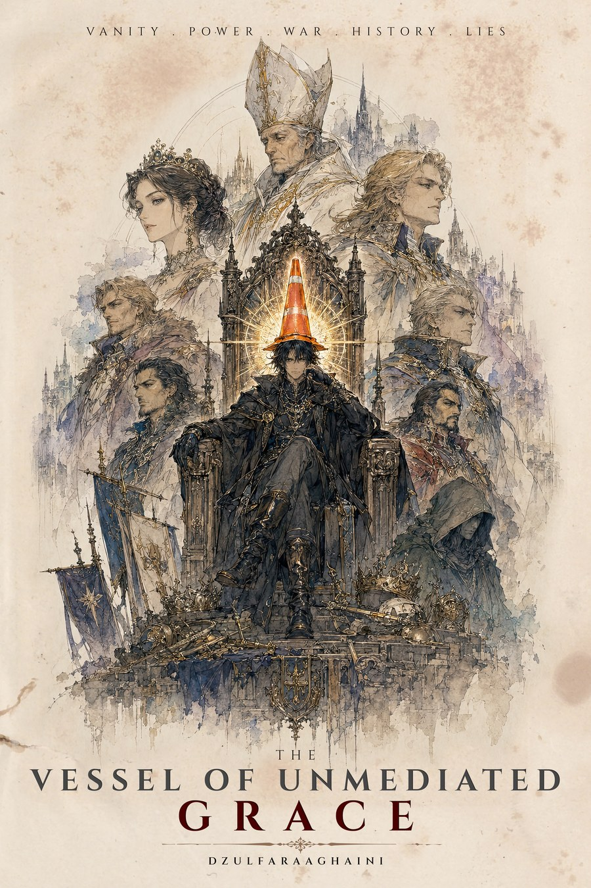
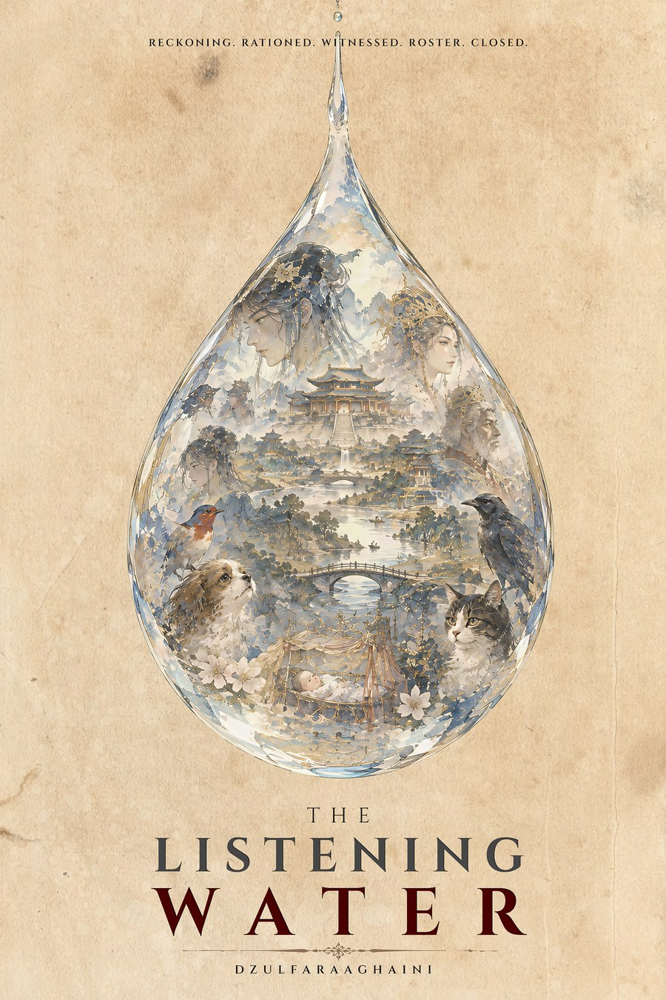
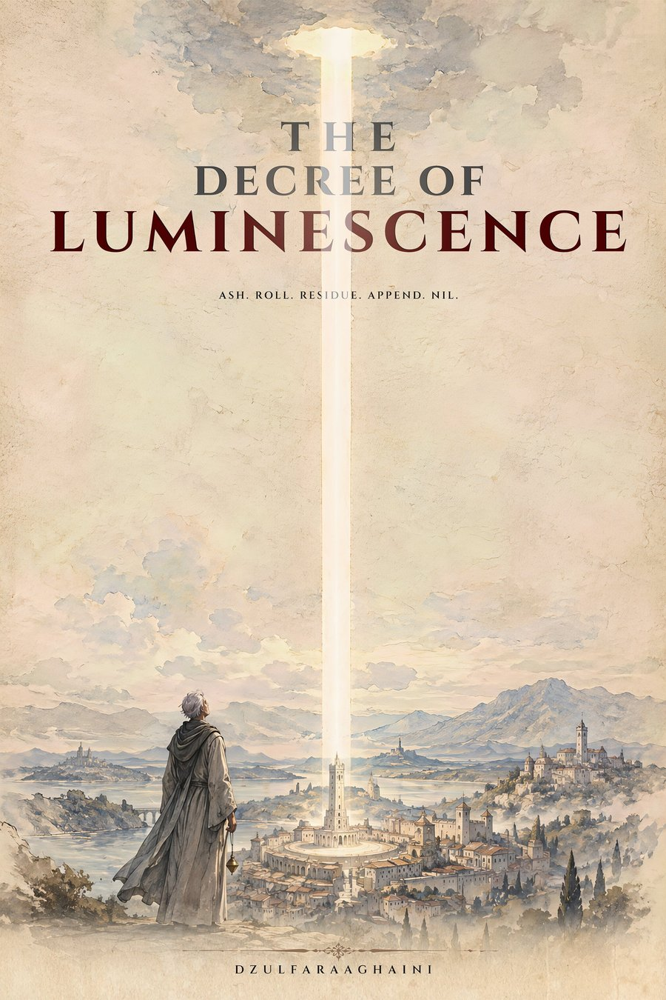

Cultivator
Definition
A loose, still-forming collective of offices and field agents — simply “observers” in the earliest records — who select subjects across many worlds and deliver a Catalyst directly into their hands, then spend the rest of that subject's life quietly filing reports on what the world does with it. The name “Cultivator” wasn't settled on until long after the practice began.
Their field agents are called Envoys, or Observers. Nearly every case has its own, and — with a single exception on file, an Envoy posted to two cases in succession — no two are the same person: each works through a numbered “deployment archetype” and a disguise suited to the world they enter — a woman on a hilltop, a traveling confectioner, an ordinary old man at the bottom of a hole, a wandering hermit, an ascetic kneeling at a drainage ditch, a court astronomer-priest who keeps a kingdom's calendar from a tower, a shipwreck survivor who has kept the same flooded ruin for a hundred and forty years. Every Envoy on file is listed below.
Not every case resolves within a single lifetime: in at least one instance on file, a Catalyst sat untouched in one family's keeping for four centuries before its case ever closed, and the Envoy assigned to it counts eleven centuries of comparable postings behind him. Redundancy is standard practice on others: one Envoy's own field notes cite several thousand comparable seedings, on the reasoning that a single object left in open ground is recovered by its intended finder only slightly more often than it's carried off by a flood, a jackdaw, or a passing child who simply wants it for its color. One Envoy on file sells her entire remaining stock to a single buyer in an ordinary afternoon of trade and is three postings distant before anyone drinks what she sold them. Another looks like a child of twelve, has not aged in four generations, and is forbidden by protocol to do anything about what she logs. A third is recalled from a tower parapet on the one evening he exceeds his instructions, and leaves a lamp burning behind him. Another, a mute stonecutter, dresses both ends of a matched pair of stones, spends thirty-one years as a quarry-hand beside the one that receives, and is asked, in notches drawn in the dust, the one question he may not answer. Another, a rat-catcher with a bait-spoon, breaks open a single clay pot in the broom-scrub of a mountain pass, files three notes, sells nothing, and passes that stonecutter on a quarry road with an exact courtesy. Another, a shrine-keeper whose watch the valley below cannot date, sits beside a spring that copies one man's whole life into the next to drink, and says the same two words to the master who comes to die at it and to the disciple who comes looking for what he left. Another, an Auditor who speaks to no one in the case, watches a marker for more than a decade, keeps finding reasons not to file the one variable that will not fit any category, and closes the terrarium with the variable open. And one, a clockmaker in two successive postings, goes on watching his second subject from a rented room two valleys away for eighteen years after the posting has formally ended. One case has none posted in person at all: a network of probes does the delivering, and an analytical office, not a field agent, files the closing log.
Envoys
One per case, in the order the books appear on this site.

Ardwen
Known in the earliest tellings as the Delivering Woman, the Sky-Answerer, the Unhastening. She delivers the sword to the boy as an offering, then watches the rest of his life from a distance and doesn't interfere again unless a prayer is asked of her plainly.
The Observer
Enters the court as an itinerant confectioner and introduces the jar, then monitors the court's collapse through instruments no one there can see. Eleven thousand and one terrariums logged by the time this one closes.
The Observer
Presents as an ordinary, forgettable old man, and keeps a permanent seat at Level 101 of the structure he built and runs — a desk at the bottom of the hole rather than a disguise out in the world.
Vane
Deployed to Solis disguised as a wandering hermit. Delivers the heels, then lingers at the edges of both courts logging everything, and declines at least one real chance to intervene.
Observer 814
Deployed to the summit of Mount Skahr four centuries before the war, and folded by the clans, within a generation, into the Dragon-Speaker who keeps the mountain — a name he never corrects. Hands the flask to a frostbitten climber with no ceremony at all, then simply waits.
Observer 902
Stationed unseen in an alcove of the Grand Basilica's own black stone, filing four centuries of flat, evaluative-language-free reports on a single cone — and breaking protocol exactly once, to note, unbidden, that the subject wanted to leave.
Observer 403
A hermit among the flooded ruins below Nine Bends for one hundred and forty-one local years, rotating through identities as the district forgets the last one. Places the eel in the basin, then does almost nothing — and keeps entering the same unauthorized phrase in his notes.
Somadatta
Working Case 0188 under cover as a traveling seed-trader, distributing the bulbs that turn a private grief into an empire's economy — and quietly keeping the cats no one else wanted.
Observer 419
A field agent of the Cultivators, deployed to the county of Vardane under cover as a traveling clockmaker. He replaces a single worn axle-joint with an unremarkable grey sphere during one night's hospitality, refuses every offer of further help, and is gone on foot three days later — forgotten the way useful strangers generally are. The wheel is not.
Observer 471
Poses as an itinerant herbalist and peddler in Jinlu, and sells four crates of ordinary trade stock — the bottle among them — to a palace under-steward without ever learning whose hands it would reach.
The Quiet One
Looks eleven to thirteen and has looked it for longer than any living shepherd can account for. Inspects the fissure on a schedule the moon has nothing to do with, logs every containment fault and every rider, and — by protocol — does nothing at all.
Observer 117
Custodian of record for the unit, working under cover as the court astronomer-priest of Vallombra. Files his reports with no first-person pronoun, keeps a private table of the dead children he can name, and on the one evening he exceeds his instructions is recalled from the tower parapet within the day.

Observer 618
Custodian of record for the Pair, working under cover as a mute stonecutter who dresses both blocks and then takes a quarry-hand's post beside the one that receives, keeping it for thirty-one years. Files in the third person, latches a quarry gate every evening and then walks back to try it, and on one winter night leaves it unlatched for a party already in flight.

The Hollow Hermit
Custodian of record for the Dragon's Tear, working in the open as the shrine-keeper at the spring: a silent old man the valley below has called the Hollow Hermit for longer than anyone can say, who is left rice and oil twice a year and asks nothing in return. He speaks the same two words twice, once to the master who came to die at the water and once to the disciple who came looking for what he left, and files his reports under the Prime Directive in the dry third person of his office, noting in them how often correctly is a word he finds himself needing.

Observer 419
The same Observer as Case 2140, posted next to Tavgora under cover as a clockmaker whose brass instruments never lose a second. He grafts the hand in three nights and is gone by the next dawn — then keeps watching, against the letter of a posting formally concluded, from a rented room two valleys away, until a column leaves a burning city by a goat track and he leaves a field on his form open for thirty-four seconds too long.

Cultivator Observer
No Envoy is posted to this case, and none delivers or observes in person. The Custodian Office's analytical authority, drawn on the sheet as an alien Cultivator, watches the probes' telemetry from beyond the reach of any native chronicle and speaks, in the closing log, as this office: terrarium stable, case closed, filed.

Observer 551
Custodian of record for Strain H-202, working under cover as a rat-catcher called Ratièr, which in the dialect is a trade and not a name: a plain brown-cloaked man with a pack and a long bait-spoon who passes through every mill, barn and cellar of a grain valley without question. He seeds the culture on the eleventh of Garren in a clay bait-pot of the kind his cover sells to mills, files three Envoy's Notes, sells nothing, and never applies his translation array to the stranger who is displaced into the case from another file. He passes that file's Custodian on the quarry road with an exact courtesy, and walks away down the south road to another posting when the case is done.

Observer 1140
A Cultivator field agent posted as a stooped traveler in an ash-grey robe, carrying no staff, no waterskin and no bag, and leaving no track in sand that otherwise holds tracks for weeks. He is fed a shepherd's last meal, presses the dinar into the shepherd's palm at dawn, and files the record of what follows, including the objection that the drop was already the intervention.

The Auditor
The Cultivator observer posted to Terrarium 0277–Vahlreth, heard only through three working notes and a closing log. Sent to watch a marker that ought to close its file in a season, the Auditor finds a variable that predates the posting, shows on no instrument the posting allows, and goes unentered in the standard report for reasons the notes keep failing to give. The watch lasts more than a decade, the variable is formally reported three months before the last entry, and the Auditor never speaks to anyone in the story.

Observer 640
Custodian of record for the Cell, working under cover as a wandering healer in Danjeri, valued less for his cures than for the way he listens. He loses the Cell to his own dog, does not reach for a blade, and files the case as compromised and non-recoverable. A second Observer, 1,451, field name Yandé, arrives in the salt trade forty-two years later; she has no sheet in this case.
Cases Where This Appears
 Case 0000The Sword of ValeriaA reckoner's life, and the sword that outlived his name.
Case 0000The Sword of ValeriaA reckoner's life, and the sword that outlived his name. Case 4099The Ledger of a Single SweetnessForty-two names, and the sweetness that cost them.
Case 4099The Ledger of a Single SweetnessForty-two names, and the sweetness that cost them. Case 0157The Stolen Prince WarAn indifferent floor, a dead prince, and a war built on the wrong reason.
Case 0157The Stolen Prince WarAn indifferent floor, a dead prince, and a war built on the wrong reason. Case 4417The Iron Stiletto WarA pair of chrome heels, and the war two crowns paid for them.
Case 4417The Iron Stiletto WarA pair of chrome heels, and the war two crowns paid for them. Case 4420The Vessel of the Betrayed HostA flask of broth, one frightened knight, and the war two ducal houses paid for.
Case 4420The Vessel of the Betrayed HostA flask of broth, one frightened knight, and the war two ducal houses paid for.
Case 4555The Vessel of Unmediated GraceA traffic cone, a reluctant duke, and forty-one years spent trying to give a crown back. Case 4438The Heavenly Thunder-SerpentOne tired fish, one polished suit of armor, and an empire that mistook a shock for a mandate.
Case 4438The Heavenly Thunder-SerpentOne tired fish, one polished suit of armor, and an empire that mistook a shock for a mandate. Case 0188The Songs Never Mention the CatsArithmetic. Seven. Cats. A debt mistaken for a miracle. Filed.
Case 0188The Songs Never Mention the CatsArithmetic. Seven. Cats. A debt mistaken for a miracle. Filed. Case 2140The Third GrainGrain. Tolerance. Grace. Arithmetic. Bread.
Case 2140The Third GrainGrain. Tolerance. Grace. Arithmetic. Bread.
Case 3115The Listening WaterReckoning. Rationed. Witnessed. Roster. Closed. Case 0156The Purging of CharsianonLedger. Unhastening. Reconstruction. Arithmetic. Filed.
Case 0156The Purging of CharsianonLedger. Unhastening. Reconstruction. Arithmetic. Filed.
Case 2365The Decree of LuminescenceA column of clear sky, a guttering lamp, and three hundred and eleven names left off the Roll. Case 2231The Stone of the Clean HandCat. Hand. Stone. Signature. Omitted.
Case 2231The Stone of the Clean HandCat. Hand. Stone. Signature. Omitted. Case 0247The Tear of the DragonCopied. Borrowed. Ledger. Unwilling. Hollow.
Case 0247The Tear of the DragonCopied. Borrowed. Ledger. Unwilling. Hollow. Case 1153The Second HandAn eleven-fingered hand, a hierarch's ruling, and eighteen years spent deciding whether it was a hand at all.
Case 1153The Second HandAn eleven-fingered hand, a hierarch's ruling, and eighteen years spent deciding whether it was a hand at all. Case 1268Independent ObservationAltitude. Round. Audit. Dormant. Unhastening.
Case 1268Independent ObservationAltitude. Round. Audit. Dormant. Unhastening. Case 0202FossaSwarm. Ditch. Signature. Tithe. Miracle.
Case 0202FossaSwarm. Ditch. Signature. Tithe. Miracle. Case 3001The Uncounted DinarOne gold coin that kept coming back, and the war two confederations paid for the wrong man.
Case 3001The Uncounted DinarOne gold coin that kept coming back, and the war two confederations paid for the wrong man. Case 0277The Uncounted VariableArithmetic. Shrimp. Unimportance. Twenty-One. Chancellor.
Case 0277The Uncounted VariableArithmetic. Shrimp. Unimportance. Twenty-One. Chancellor. Case 0113The Dog Is Not in ItWarmth. Sign. Debt. War. Unentered.
Case 0113The Dog Is Not in ItWarmth. Sign. Debt. War. Unentered.